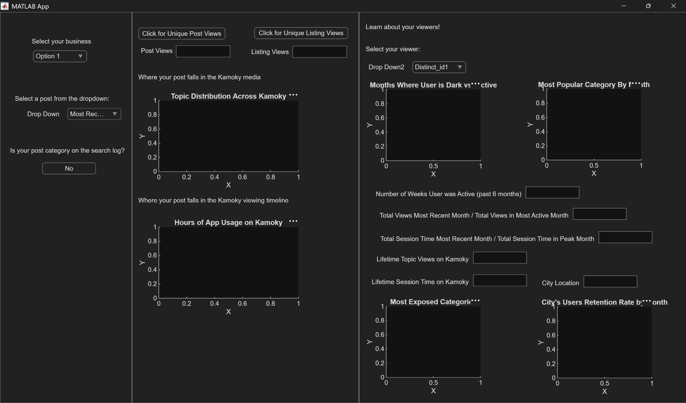
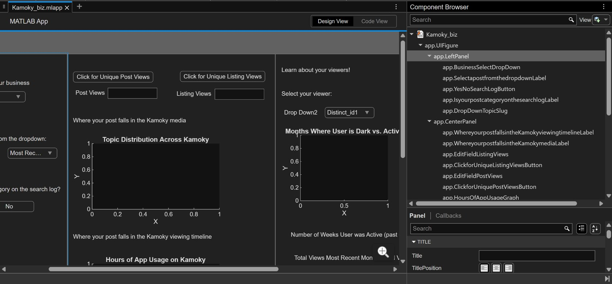

Kamoky: Ethnic Media
Analytics for Ethnic Businesses in MATLAB
During my time at Kamoky, the first-ever social media app for the ethnic diaspora, I sought after a project to complement a business dashboard page one of my coworkers was developing. Their business dashboard would incorporate multiple side tabs, including an advertisement tracker, a listings page, and an analytics page. Given the abundance of ethnic businesses (almost 400 in total) registered on the app, I found it critical that they see how well their posts performed in terms of viewership and relevance.
I worked with MATLAB GUI, a tool I had learned the semester before this internship. MATLAB makes creating an interactive, graphical frontend easy to develop due to its drag-and-drop features and in-code callback functions for components you name directly.


Now, I already had a dataset of registered businesses, so I developed an accurate matching algorithm that matched business names to posts where their name appears. Due to some gaps in our database, I wasn't able to track which user made a certain post, so I had to default to a more limited option that excluded posts failing to mention any business name. This is fine as my coworkers can easily finish the business-post database matching in the future.
The list of businesses is represented by a dropdown where the user can select the business they want to learn about. The number beside the business name is the number of posts they've made on the app (that mention this name).
For every business, there is a second drop down below that lists the partial text of their posts. The user of this app can select the post and immediately view the analytics associated with the post.
Also note that when the post text is clicked on, the full post slug is compared to a search log dataset in the backend, showing whether the post appeared in a search.
Following the business and post selection, the user can click on the respective Post Views and Listing Views buttons to see each respectively.
Below these the user would see what category their post is classified as and how frequently this category appeared in the month the post was made compared to other popular categories.
Mixpanel (our team's database) mainly exports views on posts, so it is easy to determine the distribution of views in hours throughout the day. The views on the selected post are compared to the total views in the 24 hours throughout the day for the month the post was made. This tells the user whether the post was made when the app receives the most traffic.
The third column contains a drop down to view specific behaviors of the users that viewed the business' post. Note that if the post has 6 unique views, there will be 6 options in this dropdown.
Once a viewer is selected, data regarding how many days they've visited the app since the app's creation is pulled to show their most active months. This works within the exported user data by identifying how many unique days in a month a user viewed any post. To its side, the user can cross-reference the active months of the user with the most popular category in that month, which heavily leans toward miscellaneous community discussion.
The final set of statistics for the viewer is much more descriptive. The user can see whether the last month that the viewer was active contributed a large share of views and session time to their most active month. In turn, they see whether the business' viewers are likely to return to the app. Additional metrics like the lifetime topic views and lifetime session time on the app further support this.
Next, the user of this MATLAB app can learn about whether this business' users are most exposed to categories similar to the post itself. In the case below, the viewer looked at a catering & event post, but frequently visits posts related to community discussion / opinion.
Finally, the viewer's general location is displayed, as well as the retention rate of viewers from that location month by month. This shows if the viewer is from a location with high retention, meaning viewers from that location have visited the app in a specific month, then the selected viewer is likely to return on the app for an additional post the business might make.
Altogether, this MATLAB app helps Kamoky businesses discover valuable insights about both their posts and their viewers. These insights enable advertisement posts better-timed and better-aligned with viewer activity and favorite topics. I made this project so both ethnic businesses gain better reach and Kamoky can promote better turnout for their registered businesses.
If you have the time, please take the time to watch the full demo video of me using this app!
Full app demo